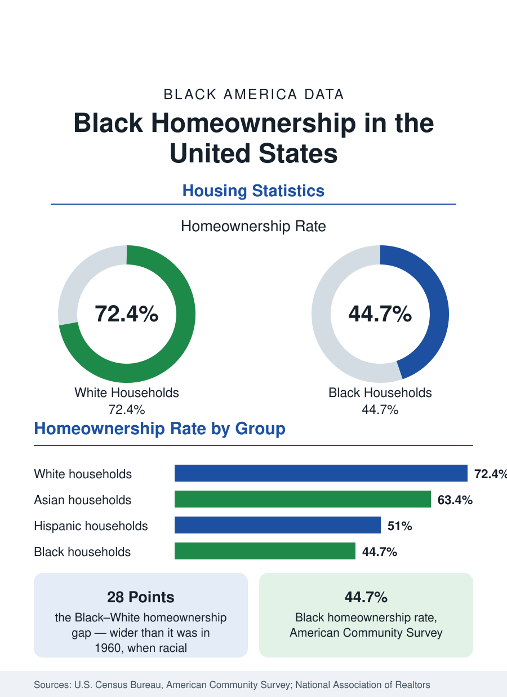

Black Census
The Black Homeownership Rate: The Gap and Its History
The Black homeownership rate stands at 44.7 percent, against 72.4 percent for White households — a gap wider than when discrimination in housing was legal. The data and its drivers.

Homeownership is the principal way American households build wealth, and the homeownership rate is therefore one of the most consequential statistics in this reference. The Black homeownership rate stands at 44.7 percent in the American Community Survey, against 72.4 percent for White households, 63.4 percent for Asian households, and 51.0 percent for Hispanic households. The resulting Black–White gap of roughly 28 percentage points is wider than it was in 1960, before the Fair Housing Act made racial discrimination in housing illegal. This article reports the data, traces the gap's history, and summarizes what the research identifies as its current drivers.
How the Rate Is Measured
The homeownership rate is the share of occupied housing units that are owner-occupied, classified by the householder's race. Two federal series track it: the Housing Vacancy Survey, published quarterly and the source of most news figures, and the American Community Survey, published annually with far more geographic and demographic detail. The two series differ by a point or so in any given year because of their methods; this reference uses the Community Survey figures and names its source on every page. Rates also vary by definition of household — the rate among families and among householders over 55 is much higher than among young householders, for every group.
A Century in the Data
Black homeownership rose through the first half of the twentieth century despite legal discrimination, reaching roughly 42 percent by the middle of the century, then climbed after the Fair Housing Act of 1968 to a peak of about 49 percent in the mid-2000s. The foreclosure crisis that followed erased a generation of gains in a few years: Black homeowners, who had been disproportionately sold subprime loans during the housing boom — including borrowers who qualified for prime terms, as subsequent investigations documented — lost homes at rates well above the national experience, and the Black rate fell back into the low 40s. It has recovered only partially since, even as overall national homeownership rebounded, which is why the gap now exceeds its 1960 level even though the Black rate itself is higher than it was then: the White rate rose faster.
Current Drivers in the Data
The contemporary gap decomposes, in the research literature, into measurable components. Income and wealth explain a large share: mortgage underwriting prices both, and the wealth gap documented in this reference means Black applicants more often lack down-payment reserves — including the intergenerational transfers from homeowner parents that fund a large share of first purchases nationally. Credit measures explain another share: Black mortgage applicants are denied at roughly twice the White rate in the federal Home Mortgage Disclosure Act data, including at similar incomes. Student debt, higher among Black graduates, delays first purchases. And supply matters: the metros where Black population is growing fastest have seen sharp price appreciation, pushing ownership out of reach for first-time buyers at prevailing incomes.
Geography of Black Ownership
Black homeownership is highest where Black population and moderate prices coincide — in the South above all. Several Southern metros record Black ownership rates in the mid-50s, and the highest state-level rates are found in states such as Mississippi and South Carolina, where Black households have owned land and homes across generations. The lowest rates are in high-cost coastal metros and in the upper Midwest's large cities, where the foreclosure crisis hit hardest. This geography inverts a common assumption: measured by ownership rate rather than wealth, the strongest Black housing position in America is Southern and small-metro, a pattern the city profiles in this reference develop in detail.
Why the Rate Matters Beyond Housing
The homeownership gap is the single largest mechanical contributor to the racial wealth gap, because home equity is the largest asset of the typical household and because ownership converts rent — a pure expense — into equity over time. It also compounds across generations: children of homeowners are substantially more likely to own, at younger ages, with family help that renters' children do not receive. The related articles in this reference take up the components in turn — the wealth data, mortgage lending patterns, Black land ownership, and the housing profiles of individual metros — but the rate itself, 44.7 against 72.4, is the figure from which all of them proceed.
The data therefore describe a stalled convergence. Black homeownership stands near its level of two generations ago in rate terms, below its mid-2000s peak, and separated from the White rate by the widest margin in the modern series — not because Black households own less than their grandparents did, but because the national market moved and the recovery from the foreclosure crisis was unevenly shared. No statistic in this reference is watched more closely, or carries more consequence per point, than this one.
More in Black Census
The Black Population of the United States: Size, Definitions, and Distribution
The Black population of the United States totals 52.8 million — 15.4 percent of the nation. How the Census Bureau defines and counts the population, and where it lives.
Black Median Household Income in the United States
Black median household income stands at $56,490 in the Census Bureau's annual income report — how the figure is measured, how it compares, and what drives it.
The Black Poverty Rate: Levels, Children, and the Long Trend
The official Black poverty rate is 17.1 percent — against 11.1 percent nationally and 7.7 percent for non-Hispanic White Americans. How poverty is measured and what the data show.
Source: U.S. Census Bureau, American Community Survey; National Association of Realtors, Snapshot of Race and Home Buying in America.